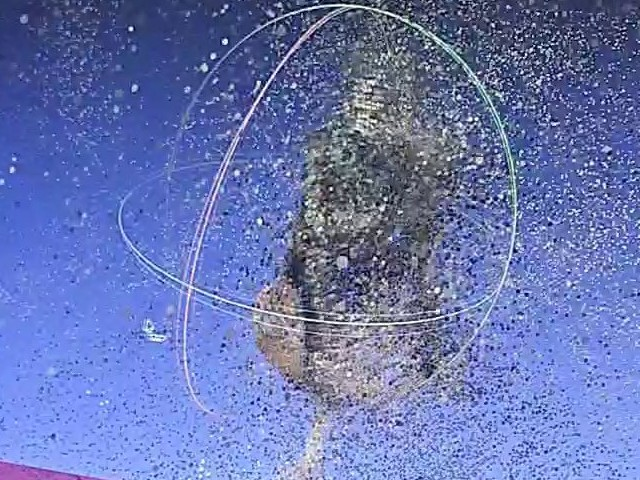

The idea
Know the camera's position instead of guessing it. A simple rig of printed gears, encoders and an Arduino carries an ordinary camera, even a phone, round the object and records exactly where it was for each photo. The point is speed and low cost: fast reconstruction methods like Instant-NGP or Gaussian splatting can then build the model in minutes.
1How it works
The camera, a phone is enough, rides on three linked arms around an object on a central platform. Seven rotary encoders read the joint angles through printed reduction gears, and an Arduino Mega 2560 turns them into the camera's position and direction with standard forward kinematics. Nothing about it is expensive: printed gears, hobby encoders and a microcontroller.


2Results
| Two-minute capture | Handheld | With the rig |
|---|---|---|
| Trial 1 | 52 | 230 |
| Trial 2 | 57 | 252 |
| Trial 3 | 66 | 279 |
| Trial 4 | 120 | 277 |
| Average | 73.75 | 259.5 |



Steadier, evenly spaced photos are why more of them register. For speed we compared reconstruction methods: COLMAP photogrammetry takes hours to days and the original NeRF 20 to 48 hours, against 21 to 36 minutes for Gaussian splatting and 5 to 8 minutes for Instant-NGP, as listed in our report.
3What's next
In the report, the gain came through COLMAP. The next step is to pass the encoder poses straight to Instant-NGP or Gaussian splatting and skip pose estimation entirely, which would bring the capture close to real time.